Extending MetMashR
Gavin Rhys Lloyd
2024-03-22
Source:vignettes/Extending_MetMashR.Rmd
Extending_MetMashR.RmdIntroduction
There is a number software solutions available to annotate an LCMS
metabolomics datasets. We have only included a small number
annotation_sources in MetMashR as they are the
ones we use the most.
In this document we describe how to extend the provided templates to include new sources bespoke to your requirements.
Getting Started
The latest versions of struct and
MetMashR that are compatible with your current R version
can be installed using BiocManager.
# install BiocManager if not present
if (!requireNamespace("BiocManager", quietly = TRUE)) {
install.packages("BiocManager")
}
# install MetMashR and dependencies
BiocManager::install("MetMashR")Once installed you can activate the packages in the usual way:
Example study
In this example we are going to import some annotations from a study on Metabolomics Workbench and build a workflow to clean up the table and search for PubChem CIDs so that we can present some images of some of the annotated metabolites for the study.
First, we need to import the table of annotations from Metabolomics
Workbench. For this we make use of the
metabolomicsWorkbenchR package.
# get annotations
AN <- do_query(
context = "study",
input_item = "analysis_id",
input_value = "AN000465",
output_item = "metabolites"
)The imported table has 747 rows and 8 columns. For brevity in this vignette we have cached the first 10 rows and stored them in the package.
We can convert the imported table into an
annotation_table:
AT <- annotation_table(data = AN, id_column = NULL)All annotation_table objects must have an id for each
row in the table. This is so that later, when examining the outputs of
workflow steps, you can easily trace an annotation through the workflow.
The default id_column = NULL will create a new column
‘.MetMashR_id’ containing the row index as an identifier unless provided
with an alternative column name, which should be the name of a column
already in the table.
Two steps needed to clean up this table are not provided by
MetMashR:
- removal of empty columns
- removal of suffix from duplicate molecule names
We will implement these steps here as an example of how to add new
workflow steps using the struct
package template system. We will also implement an new
annotation_source to import the data from Metabolomics
Workbench as part of the workflow.
Annotation Sources
Annotation sources are the mechanism used by MetMashR to
get tables of annotation data into R and into a well-defined format.
Each extension of the base annotation_source template
provides methods to import the raw annotation table and convert it into
a type of annotation_table suitable for the input data. For
example, the cd_source defines methods to import annotation
data from Compound Discoverer’s Excel format and convert it into a
lcms_table object.
Adding new annotation sources
If we plan to import annotation data from Metabolomics Workbench a
lot we could consider implementing a new annotation_source
that would import the annotations as part of a workflow model
sequence.
We will do this now as an example of implementing a new
annotation_source.
All annotation_source objects use the model
template from the struct package, so we could create the definition of a
source on-the-fly. However, annotation_sources are likely to be used
multiple times to read in data from the same source, so instead we
define the new source in a more permanent way, by using code that can be
included in a script to be sourced, or in a new R package.
There are three key components to an annotation source object, or indeed any struct model object:
- A definition of the object which defines what the input and output parameters will be.
- A function to create an instance of the object and populate initial values for input parameters.
- A
model_applymethod. For annotation sources this method will read in data from the source file and parse it into anannotation_table.
We will implement each of these steps now.
The class definition
In this example there are no input and output slots, but they could
be defined using the slots parameter, and then
differentiated by name using .params and
.outputs in the prototype.
We have defined libraries in the prototype. This is a
list of R package names that are needed to use this object in addition
to the depends/imports of MetMashR.
The calling function
The calling function is a small function that creates a new instance
of the source object using new_struct and provides a
mechanism to initialise values based on input parameters.
The use of ellipsis ... allows us to pass additional
values to the base struct object like name and description
without including them in the function definition, in case we want to
override the values defined in the prototype of the class definition in
the previous section.
mwb_source <- function(...) {
# new object
out <- new_struct(
"mwb_source",
...
)
return(out)
}The import method
Like all model objects, the workhorse method for annotation sources
is method_apply. For annotation sources this method is used
to import and parse the source files into an
annotation_table.
Here we use setMethod to define the method for the new
source.
setMethod(
f = "read_database",
signature = c("mwb_source"),
definition = function(obj) {
## get annotations using metabolomicsWorkbenchR
# AN = do_query(
# context = "study",
# input_item = "analysis_id",
# input_value = M$analysis_id,
# output_item = "metabolites")
## for vignette use locally cached subset
AN <- readRDS(
system.file("extdata/AN000465_subset.rds", package = "MetMashR")
)
return(AN)
}
)Note how we pass M$analysis id to the
do_query function so that we can import annotations from
any Metabolomics Workbench study when using our new source object.
Using the new source
The new mwb_source and method_apply method
are ready to use. To import the table we can use the
import_source method:
# initialise source
SRC <- mwb_source(
source = "AN000465"
)
# import
AT <- read_source(SRC)Variable AT is the imported and cleaned
annotation_database from Metabolomics Workbench and can be
used as input to model_apply for other models and sequence,
e.g. to look up PubChem Ids etc.
Adding annotation workflow steps
MetMashR workflow steps use the model
template from the struct
package. Although originally intended for statistical methods, the
model template is a flexible way to implement many
different kinds of workflow step.
The struct package provides convenience functions for “on-the-fly” implementation of new model objects. Here will will use the convenience functions to implement the first new model. Examples of this are also included in the struct package vignette.
Empty column removal
To define a new model object we can use the
set_struct_obj function. The new object is fairly simple in
that no input parameters are required. The only output slot will contain
the annotation_table after we have removed the empty
columns.
For the prototype input we provide a name and a
description for our new model. This is good practice as our intentions
for this model are explicitly stated and stay with the model wherever we
use it, helping to ensure transparency, reproducibility etc. We also
defined the default output of the model by providing
predicted in the prototype.
set_struct_obj(
class_name = "drop_empty_columns",
struct_obj = "model",
params = character(0),
outputs = c(updated = "annotation_source"),
private = character(0),
prototype = list(
name = "Drop empty columns",
description = paste0(
"A workflow step that removes columns from an annotation table ",
"where all rows are NA."
),
predicted = "updated"
)
)We can now create an instance of our new model, and use the
show method to display information about it.
M <- drop_empty_columns()
show(M)
#> A "drop_empty_columns" object
#> -----------------------------
#> name: Drop empty columns
#> description: A workflow step that removes columns from an annotation table where all rows are NA.
#> outputs: updated
#> predicted: updated
#> seq_in: dataBefore we can use our new model we need to implement the
model_apply method for it. This is the function that
actually does all the work. In this case it will search for columns of
missing values and then remove them from the
annotation_table. To define this method we use the
set_obj_method function.
set_obj_method(
class_name = "drop_empty_columns",
method_name = "model_apply",
signature = c("drop_empty_columns", "annotation_source"),
definition = function(M, D) {
# search for columns of NA
W <- lapply( # for each column
D$data, # in the annotation table
function(x) {
all(is.na(x)) # return TRUE if all rows are NA
}
)
# get index of columns with all rows NA
idx <- which(unlist(W))
# if any found, remove from annotation table
if (length(idx) > 0) {
D$data[, idx] <- NULL
}
# update model object
M$updated <- D
# return object
return(M)
}
)Note that in the signature we specify that the second
input is an annotation_table.
The new model is ready to use. We can test it using the
model_apply method, and check that some columns have been
removed.
M <- model_apply(M, AT)The number of columns before was:
ncol(AT$data)
#> [1] 8The number of columns afterwards is:
ncol(M$updated$data)
#> [1] 5Suffix removal
The second model removes the suffix from the molecule names. The is necessary if we want to use the molecule names to e.g search for PubChem identifiers using the REST API; we wont get a match if the suffix is part of the molecule name.
As we did for drop_empty_columns we use the
set_struct_obj and set_obj_method function to
create our new workflow step.
# define new model object
set_struct_obj(
class_name = "remove_suffix",
struct_obj = "model",
params = c(clean = "logical", column_name = "character"),
outputs = c(updated = "annotation_source"),
prototype = list(
name = "Remove suffix",
description = paste0(
"A workflow step that removes suffixes from molecule names by ",
"splitting a string at the last underscore an retaining the part",
"of the string before the underscore."
),
predicted = "updated",
clean = FALSE,
column_name = "V1"
)
)
# define method for new object
set_obj_method(
class_name = "remove_suffix",
method_name = "model_apply",
signature = c("remove_suffix", "annotation_source"),
definition = function(M, D) {
# get list of molecule names
x <- D$data[[M$column_name]]
# split string at last underscore
s <- strsplit(x, "_(?!.*_)", perl = TRUE)
# get left hand side
s <- lapply(s, "[", 1)
# if clean replace existing column, otherwise new column
if (M$clean) {
D$data[[M$column_name]] <- unlist(s)
} else {
D$data$name.fixed <- unlist(x)
}
# update model object
M$updated <- D
# return object
return(M)
}
)For this model we included two input parameters and provided default
values in the prototype:
- column_name: the name of the column in the annotation table containing molecule names
- clean: a flag that will replace the old column if TRUE or add a new column if FALSE
Metabolite mashing
Now that we have defined our new workflow steps we can use them in a
model_seq (workflow), alongside other existing steps to
mash the annotations with other tables containing identifiers and
additional information.
In this case we do the following:
- import the annotations from Metabolomics Workbench
- remove empty columns
- remove suffixes from molecule names
- search the Metabolomics Workbench refmet database for identifiers
- use the PubChem REST API so search for compound CIDs
- combine the CID columns from refmet and pubchem into a single column, giving priority to refmet, to obtain a single column of identifiers we have confidence in for as many metabolites as possible
- use the PubChem REST API to obtain SMILES for each metabolite
For clarity in the workflow we import the refmet database before using it in the workflow instead of importing it in-line. We also import some cached REST API responses so that we dont overburden the service when generating the vignette.
# refmet
refmet <- mwb_refmet_database()
# pubchem caches
pubchem_cid_cache <- rds_database(
source = system.file("cached/pubchem_cid_cache.rds",
package = "MetMashR"
)
)
pubchem_smile_cache <- rds_database(
source = system.file("cached/pubchem_smiles_cache.rds",
package = "MetMashR"
)
)In practice it is better to create your own cache using
e.g. rds_database, sql_database or other
struct_database objects with write access. See the vignette
[TODO] for more details.
# prepare sequence
M <- import_source() +
drop_empty_columns() +
remove_suffix(
clean = TRUE,
column_name = "metabolite_name"
) +
database_lookup(
query_column = "refmet_name",
database_column = "name",
database = refmet,
suffix = "_mwb",
include = "pubchem_cid"
) +
pubchem_compound_lookup(
query_column = "metabolite_name",
search_by = "name",
suffix = "_pc",
output = "cids",
records = "best",
delay = 0.2,
cache = pubchem_cid_cache
) +
prioritise_columns(
column_names = c("pubchem_cid_mwb", "CID_pc"),
output_name = "pubchem_cid",
source_name = "pubchem_cid_source",
source_tags = c("mwb", "pc"),
clean = TRUE
) +
pubchem_property_lookup(
query_column = "pubchem_cid",
search_by = "cid",
suffix = "",
property = "CanonicalSMILES",
delay = 0.2,
cache = pubchem_smile_cache
)
# apply sequence
M <- model_apply(M, mwb_source(source = "AN000465"))Note that because the first step in the workflow is to import data
from Metabolomics Workbench, we only need to provide an empty
annotation_table as input to model_apply as it will be
updated when we run the workflow.
Once the table has been processed by our workflow we then use OpenBabel to generate images of the molecular structures from SMILES.
# prepare chart
C <- openbabel_structure(
smiles_column = "CanonicalSMILES",
row_index = 1,
scale_to_fit = FALSE,
view_port = 400,
image_size = 500
)
# loop over some records and plot some of the molecules
G <- list()
x <- 1
for (k in c(3, 5)) {
C$row_index <- k
G[[x]] <- chart_plot(C, predicted(M))
x <- x + 1
}
cowplot::plot_grid(plotlist = G, nrow = 1, labels = "AUTO")
Summary
Extending the templates provided by struct to implement
workflow steps for metabolite mashing is straight forward using either
the provided on-the-fly functions or scripting more permanent solutions.
All objects that use the templates will be compatible with other
workflow objects provided you follow the templates. As well as new
workflow steps MetMashR can also be extended to include additional
annotation sources.
Session Info
sessionInfo()
#> R Under development (unstable) (2024-03-13 r86113)
#> Platform: x86_64-pc-linux-gnu
#> Running under: Ubuntu 22.04.4 LTS
#>
#> Matrix products: default
#> BLAS: /usr/lib/x86_64-linux-gnu/openblas-pthread/libblas.so.3
#> LAPACK: /usr/lib/x86_64-linux-gnu/openblas-pthread/libopenblasp-r0.3.20.so; LAPACK version 3.10.0
#>
#> locale:
#> [1] LC_CTYPE=en_US.UTF-8 LC_NUMERIC=C
#> [3] LC_TIME=en_US.UTF-8 LC_COLLATE=en_US.UTF-8
#> [5] LC_MONETARY=en_US.UTF-8 LC_MESSAGES=en_US.UTF-8
#> [7] LC_PAPER=en_US.UTF-8 LC_NAME=C
#> [9] LC_ADDRESS=C LC_TELEPHONE=C
#> [11] LC_MEASUREMENT=en_US.UTF-8 LC_IDENTIFICATION=C
#>
#> time zone: UTC
#> tzcode source: system (glibc)
#>
#> attached base packages:
#> [1] stats graphics grDevices utils datasets methods base
#>
#> other attached packages:
#> [1] ggplot2_3.5.0 metabolomicsWorkbenchR_1.13.0
#> [3] MetMashR_0.99.0 struct_1.15.4
#> [5] BiocStyle_2.31.0
#>
#> loaded via a namespace (and not attached):
#> [1] tidyselect_1.2.1 farver_2.1.1
#> [3] dplyr_1.1.4 blob_1.2.4
#> [5] filelock_1.0.3 bitops_1.0-7
#> [7] fastmap_1.1.1 RCurl_1.98-1.14
#> [9] BiocFileCache_2.11.1 digest_0.6.35
#> [11] lifecycle_1.0.4 rsvg_2.6.0
#> [13] RSQLite_2.3.5 magrittr_2.0.3
#> [15] compiler_4.4.0 rlang_1.1.3
#> [17] sass_0.4.9 tools_4.4.0
#> [19] utf8_1.2.4 yaml_2.3.8
#> [21] data.table_1.15.2 knitr_1.45
#> [23] labeling_0.4.3 S4Arrays_1.3.6
#> [25] htmlwidgets_1.6.4 ontologyIndex_2.12
#> [27] bit_4.0.5 curl_5.2.1
#> [29] DelayedArray_0.29.9 plyr_1.8.9
#> [31] abind_1.4-5 withr_3.0.0
#> [33] purrr_1.0.2 BiocGenerics_0.49.1
#> [35] desc_1.4.3 grid_4.4.0
#> [37] stats4_4.4.0 fansi_1.0.6
#> [39] colorspace_2.1-0 scales_1.3.0
#> [41] MultiAssayExperiment_1.29.1 SummarizedExperiment_1.33.3
#> [43] cli_3.6.2 rmarkdown_2.26
#> [45] crayon_1.5.2 ragg_1.3.0
#> [47] generics_0.1.3 httr_1.4.7
#> [49] DBI_1.2.2 cachem_1.0.8
#> [51] stringr_1.5.1 zlibbioc_1.49.3
#> [53] ggthemes_5.1.0 BiocManager_1.30.22
#> [55] XVector_0.43.1 matrixStats_1.2.0
#> [57] vctrs_0.6.5 Matrix_1.6-5
#> [59] jsonlite_1.8.8 bookdown_0.38
#> [61] IRanges_2.37.1 S4Vectors_0.41.5
#> [63] bit64_4.0.5 magick_2.8.3
#> [65] systemfonts_1.0.6 jquerylib_0.1.4
#> [67] glue_1.7.0 ChemmineOB_1.41.2
#> [69] pkgdown_2.0.7.9000 cowplot_1.1.3
#> [71] stringi_1.8.3 gtable_0.3.4
#> [73] GenomeInfoDb_1.39.9 GenomicRanges_1.55.4
#> [75] munsell_0.5.0 tibble_3.2.1
#> [77] pillar_1.9.0 htmltools_0.5.7
#> [79] GenomeInfoDbData_1.2.11 R6_2.5.1
#> [81] dbplyr_2.5.0 textshaping_0.3.7
#> [83] evaluate_0.23 lattice_0.22-6
#> [85] Biobase_2.63.0 highr_0.10
#> [87] memoise_2.0.1 bslib_0.6.1
#> [89] Rcpp_1.0.12 SparseArray_1.3.4
#> [91] xfun_0.42 fs_1.6.3
#> [93] MatrixGenerics_1.15.0 pkgconfig_2.0.3